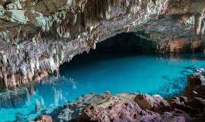
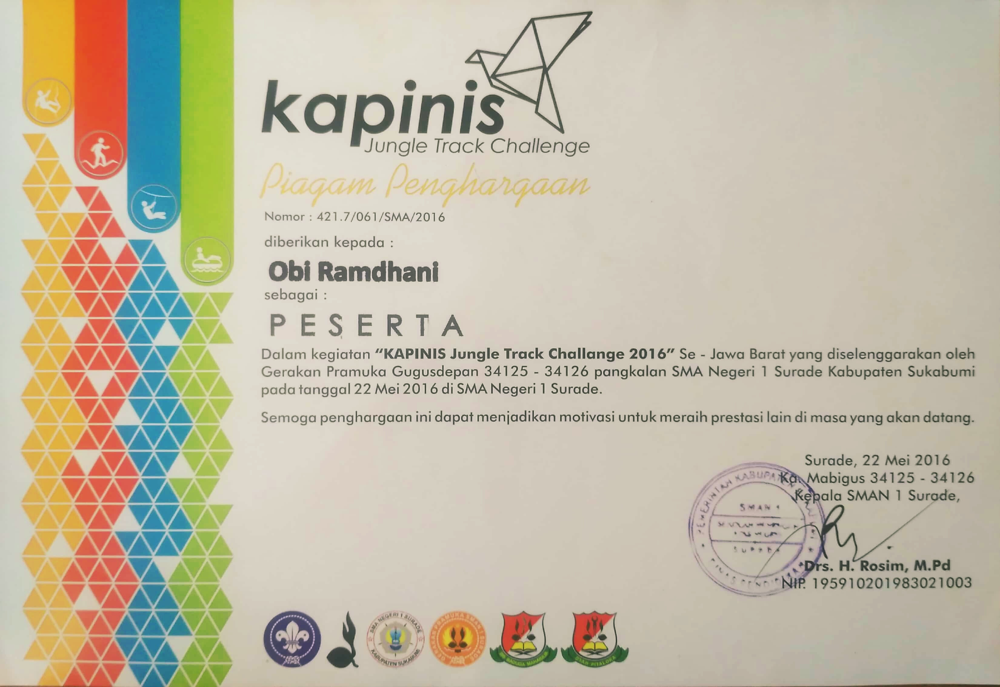
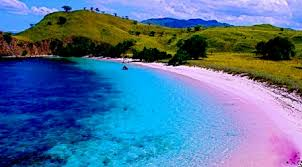

Gerbang Menuju Keajaiban Alam Komodo
Labuan Bajo adalah sebuah kota kecil yang terletak di ujung barat
Pulau Flores, Indonesia. Kota ini terkenal karena menjadi pintu
gerbang menuju Taman Nasional Komodo, rumah bagi kadal komodo yang
terkenal sebagai reptil terbesar di dunia. Selain menjadi tempat
untuk menjelajahi keindahan alam Taman Nasional Komodo, Labuan Bajo
juga menawarkan berbagai aktivitas seperti snorkeling, diving, dan hiking.
Selama beberapa tahun terakhir, Labuan Bajo telah berkembang pesat sebagai
destinasi wisata yang populer, dengan banyaknya pengunjung yang datang dari
dalam negeri maupun mancanegara. Hal ini mengakibatkan pertumbuhan industri
pariwisata di daerah tersebut, dengan banyaknya hotel, restoran, dan layanan
wisata lainnya yang bermunculan.
Namun, pertumbuhan cepat ini juga menimbulkan beberapa tantangan, termasuk
masalah keberlanjutan lingkungan dan sosial. Upaya untuk menjaga kelestarian
alam sambil mempromosikan pariwisata yang bertanggung jawab menjadi fokus
penting bagi pemerintah dan komunitas lokal di Labuan Bajo.
Selain Taman Nasional Komodo, Labuan Bajo juga dikenal dengan keindahan
alamnya yang spektakuler, seperti pantai-pantai berpasir putih, pulau-pulau terpencil,
dan perairan yang kaya akan kehidupan laut. Ini menjadikan Labuan Bajo sebagai destinasi
yang menarik bagi para pecinta alam dan penggemar aktivitas air.


